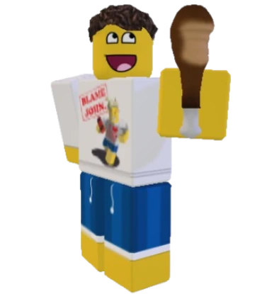

Mojo/Layne
Since I'm new to the programming world, you're looking at my first projects! That being this webpage and game. Along with programming, I quite enjoy spending my time drawing. The plan for my next project is to include original characters I've created. If you look to the top left you'll see Shedletsky from the hit game Forsaken. Who, unforunately, isn't what I look like yet,